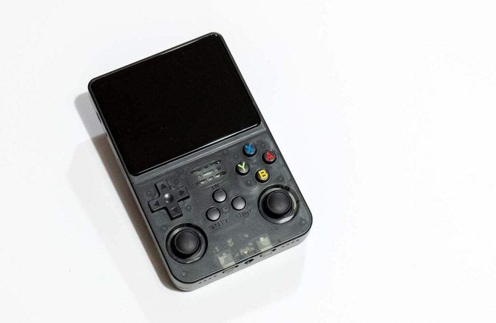

PLAYER 1 · INSERT COIN
Entrar
Use a sua conta Google. Não existe senha do R36S Web: quem protege o acesso é o Google, com a sua verificação em duas etapas.
Antes de continuar
← Voltar
O Google vai mostrar "Este app não foi verificado". É normal: é um projeto pessoal. Clique em Avançado e depois em Acessar R36S Web.
O site pede para ler a pasta R36S e gravar só os seus saves.